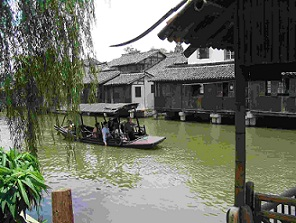
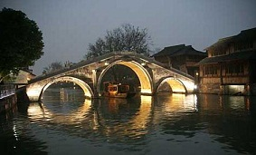
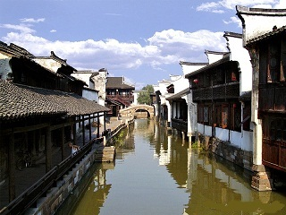
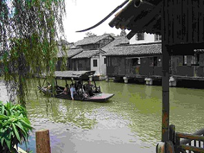
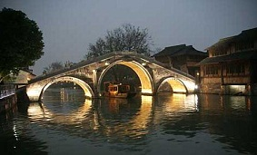
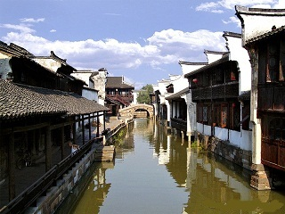
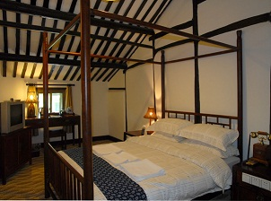
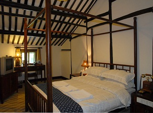

 |
||
 |
||
国家AAAAA级景区，全国二十个黄金周预报景点及江南四大名镇之一。曾名乌墩和青墩，具有六千余年悠久历史。乌镇是典型的江南水乡古镇，素有“鱼米之乡，丝绸之府”之称。一九九一年被评为浙江省历史文化名城，一九九九年开始古镇保护和旅游开发工程。陕西省有同名小镇。
走进乌镇，走在那用青石板铺成的狭窄的小街上，看到两边各式各样的民居和仍住在民房中的乡民，就会让人有一种亲切自然的感觉。作为历史古镇，乌镇无论是整个镇还是观前街，都体现着一种人文环境和自然环境和谐相处的整体美。走进这个充满了农业文化氛围的古镇，漫步于古镇绵延一里多长的石板小街上，可以倾听脚步在另一小巷上的回音。沿水小街有“石帮岸”，有些可能有修饰，比如我见过雕上一个瓶，瓶里插着三支戟，取“平升三级”的意思。用以系船。
乌镇和许多江南水乡小镇一样，街道、民居皆沿溪、河而造，正所谓“人家尽枕河”。与众不同的是沿河的民居有一部分延伸至河面，下面用木桩或石柱打在河床中，上架横梁，搁上木板，人称“水阁”，这是乌镇所特有的风貌。水阁是真正的“枕河”，三面有窗，凭窗可观市河风光。
 
